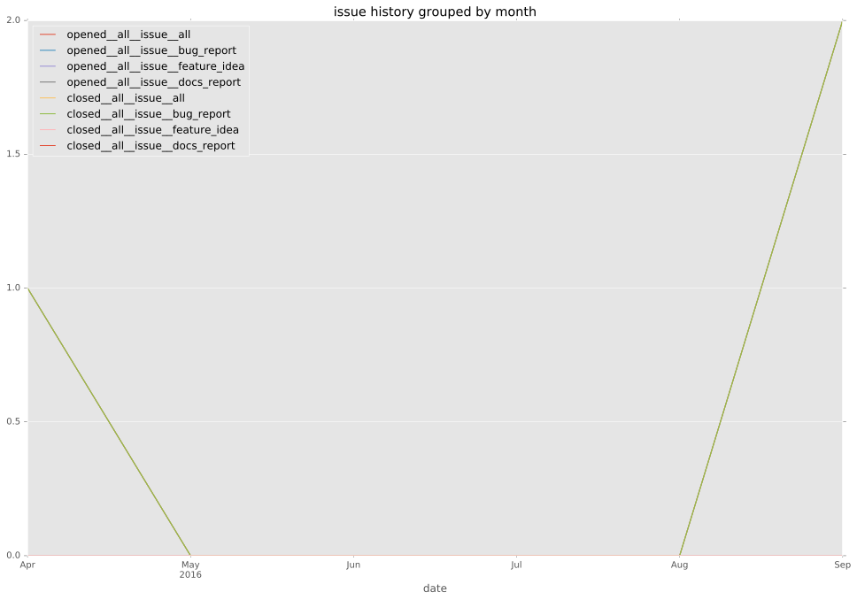
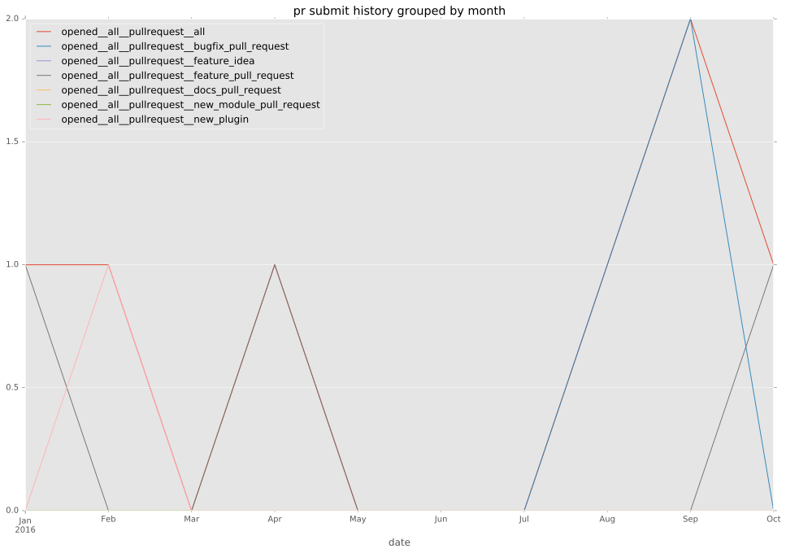
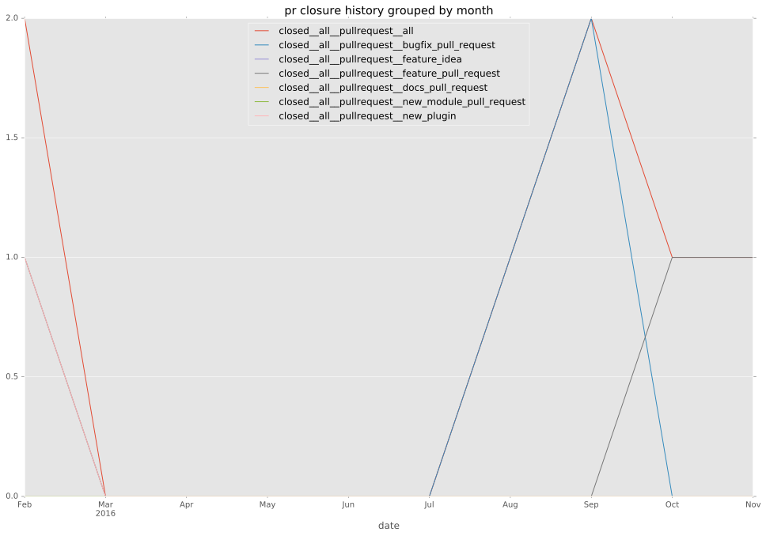

authors
- privateip
maintainers
- privateip
- gundalow
contributors
- privateip : 59 commits
- gundalow : 11 commits
- grybak-arista : 3 commits
total issue counts
feature pull request: 2
pullrequest: 11
docs pull request: 1
bugfix pull request: 7
feature idea: 1
issue: 6
new plugin: 1
bug report: 5
issue history

pullrequest history


days open by issue type
bugfix pull request
count: 13
std: 28.5558382373
min: 0
max: 75
median: 0.0
mean: 17.4615384615
all
count: 26
std: 21.8046219518
min: 0
max: 75
median: 5.5
mean: 14.1923076923
pullrequest
count: 0
std: nan
min: nan
max: nan
median: nan
mean: nan
docs pull request
count: 2
std: 0.0
min: 7
max: 7
median: 7.0
mean: 7.0
feature pull request
count: 3
std: 12.7017059222
min: 15
max: 37
median: 15.0
mean: 22.3333333333
feature idea
count: 1
std: nan
min: 36
max: 36
median: 36.0
mean: 36.0
issue
count: 0
std: nan
min: nan
max: nan
median: nan
mean: nan
new plugin
count: 2
std: 0.0
min: 4
max: 4
median: 4.0
mean: 4.0
bug report
count: 5
std: 4.21900462195
min: 0
max: 8
median: 1.0
mean: 3.4
closures grouped by total days open